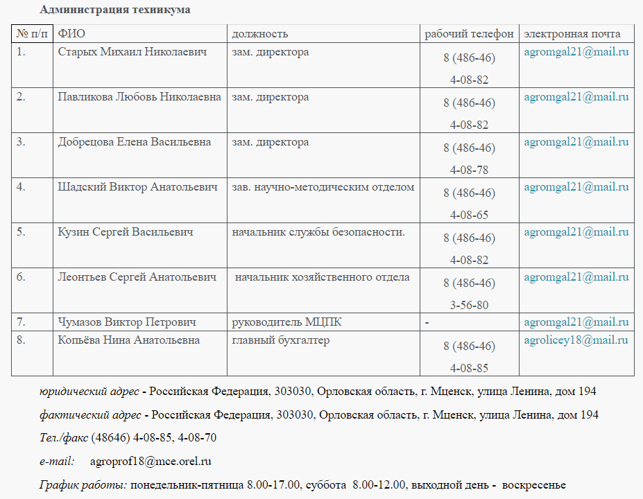
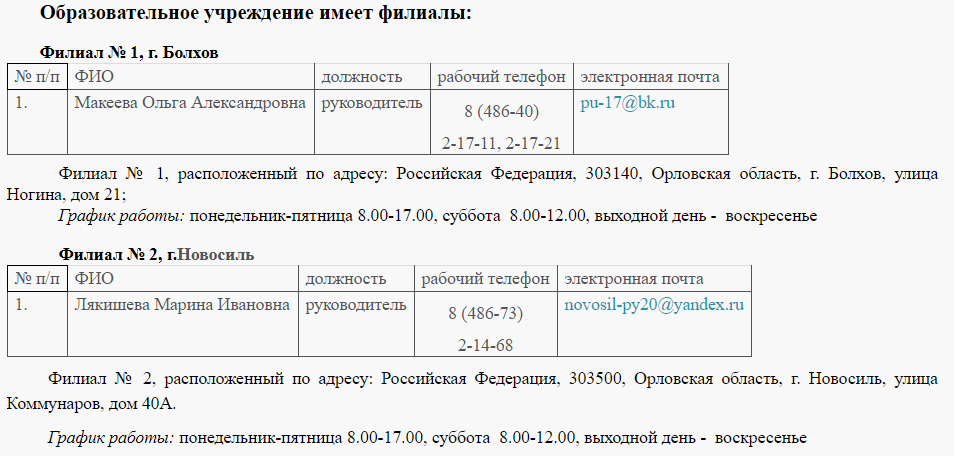

Виртуальная приемная
Задайте интересующий Вас вопрос и наш директор или сотрудники техникума ответят Вам!
Задать вопрос >>
Актуальная информация
Узнать подробнее >>Основные сведения
1 марта 1921 года приказом губернского управления профессионального образования зарегистрировано профессиональное учреждение - «Мценская профессионально-техническая школа».
В сентябре 1943 года на базе Мценской профессионально-технической школы была открыта школа фабрично-заводского обучения № 5.
В 1954 года на базе школы фабрично-заводского обучения № 5 создаётся училище механизации сельского хозяйства № 9. В результате слияния училища механизации сельского хозяйства № 9 с училищем механизации сельского хозяйства № 8 образуется училище механизации сельского хозяйства № 2.
Приказом областного управления профессионально-технического образования Орловской области от 22 апреля 1962 года№ 103 училище механизации сельского хозяйства № 2 было преобразовано в сельское профессионально-техническое училище № 14.
Приказом Государственного комитета Совета Министров РСФСР по профессионально-техническому образованию 1974 года сельскому профессионально-техническому училищу № 14установлено наименование: среднее сельское профессионально-техническим училищем № 14.
Приказом областного управления профессионально-технического образования от 26 сентября 1984 года № 115 среднее сельское профессионально-техническим училищем № 14 переименовано на среднее профессиональное училище № 18.
Приказом Управления общего и профессионального образования Орловской области от 21 августа 1989 года № 28 среднее профессиональное училище № 18 переименовано на Мценский государственный агротехнический лицей - высшее профессиональное училище № 18.
Приказом Министерства образования РСФСР и Государственного агропромышленного комитета Нечернозёмной зоны РСФСР от 13 июля 1990 г. № 207/248 на базе сельского СПТУ № 18 в порядке эксперимента был организован новый тип учебного заведения - профессиональное высшее училище, агротехнический лицей № 18.
Приказом № 394 от 07 апреля 2000 года Управления общего и профессионального образования администрации Орловской области государственный агротехнический лицей № 18 был переименован на государственное образовательное учреждение «Профессиональный агротехнический лицей № 18» г. Мценска.
Распоряжением Правительства Орловской области от 26 января 2010 года № 13-р государственному образовательному учреждению «Профессиональный агротехнический лицей № 18» установлено наименование: областное государственное образовательное учреждение начального профессионального образования «Профессиональный агротехнический лицей № 18» г. Мценска.
Распоряжением Правительства Орловской области от 27 июля 2010 года № 283-р областное государственное образовательное учреждение начального профессионального образования «Профессиональный агротехнический лицей № 18 преобразовано в областное государственно образовательное учреждение среднего профессионального образования «Орловский техникум агробизнеса и сервиса» г. Мценска.
Распоряжением Правительства Орловской области от 28 апреля 2011 года № 179-р создано бюджетное образовательное учреждение Орловской области среднего профессионального образования «Орловский техникум агробизнеса и сервиса» путем изменения типа областного государственного образовательного учреждения среднего профессионального образования «Орловский техникум агробизнеса и сервиса» г. Мценска.
Бюджетное образовательное учреждение Орловской области среднего профессионального образования «Орловский техникум агробизнеса и сервиса» реорганизовано путём присоединения к нему бюджетного образовательного учреждения Орловской области начального профессионального образования «Профессиональное училище № 17» и бюджетного образовательного учреждения Орловской области начального профессионального образования «Профессиональное училище № 20» в соответствии с распоряжением Правительства Орловской области от 24 мая 2013 года № 206-р и является правопреемником бюджетного образовательного учреждения Орловской области начального профессионального образования «Профессиональное училище № 20» и бюджетного образовательного учреждения Орловской области начального профессионального образования «Профессиональное училище № 17».
Распоряжением Правительства Орловской области от 21 августа 2015 года № 304-р бюджетное образовательное учреждение Орловской области среднего профессионального образования «Орловский техникум агробизнеса и сервиса» переименовано на бюджетное профессиональное образовательное учреждение Орловской области «Орловский техникум агробизнеса и сервиса».
Учредителем Учреждения является субъект Российской Федерации - Орловская область. Функции и полномочия учредителя Учреждения осуществляет Департамент образования Орловской области
Почтовый адрес: 302021, г. Орел, Ленина пл., д. 1.
E-mail: pr_obraz@adm.orel.ru
Шевцова Татьяна Анатольевна - Член Правительства Орловской области - руководитель Департамента образования Орловской области Телефон: 59-82-90
БПОУ ОО "Орловский техникум агробизнеса и сервиса"
Директор техникума - Домогатский Константин Игоревич
 